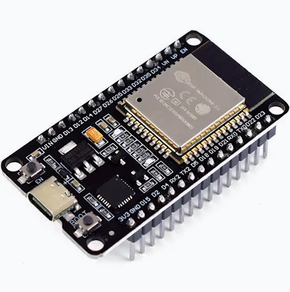
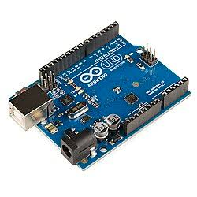

Instead of the Pi’s pins

Wi-Fi built in and runs on a battery. Put sensors anywhere in the room.

Boots instantly, reads 5V and analog sensors directly. Plugs into the Pi by USB.
Instead of p5.js
p5.js’s older sibling, in Java. Same setup() and draw(), and it runs on the Pi.
Node-based live visuals and projection mapping. Needs a Mac or PC.
A 3D game engine for immersive worlds and big screens. Needs a Mac or PC.
Mix and match: any board can feed any tool. The visuals don’t even need to be in the same place: they can run on a separate computer, in another room or another city, as long as the messages can reach it.